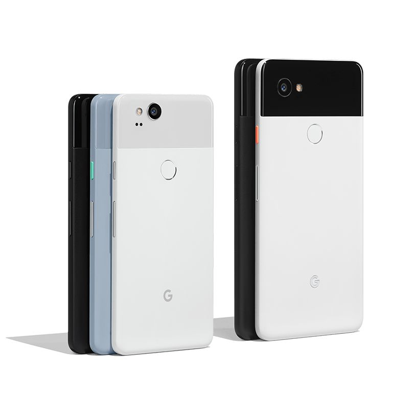
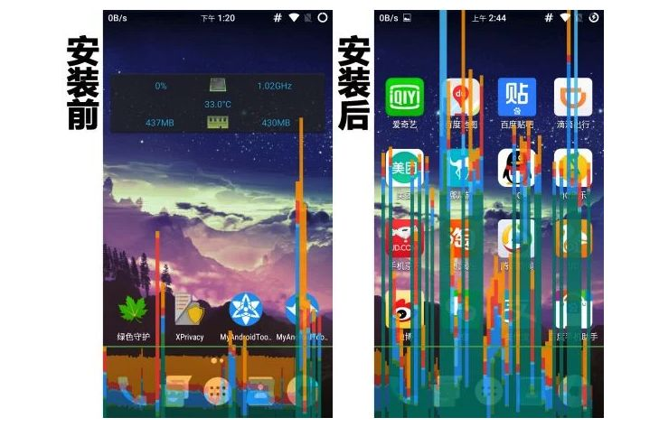
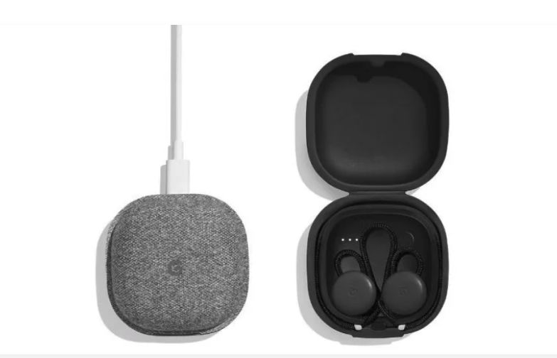
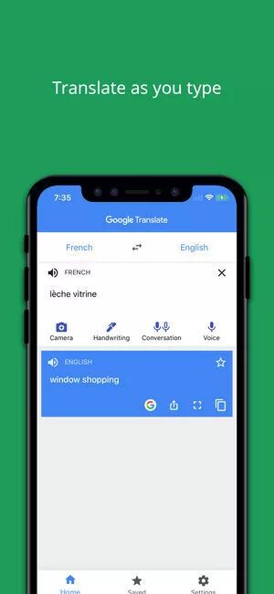

安卓以及Pixel 2
记得去年Pixel 2 刚出的时候，有好多文章说这个手机真的很屌，比如说它的相机好呀，它的AI系统超级先进啊之类的。作为一个一直用苹果的老用户，我也一直好奇安卓的机器怎么样，再加上之前Mactalk写过一篇文章，说什么现在新的潮流是要从苹果切换到安卓，要从Mac切换到Windows，我就一直跃跃欲试很想试试看。
于是在去年的这个时候，我就买了一个Pixel 2来玩。虽说Pixel 2随机器附带了一个硬件用于转移手机的数据啥的，换过去以后还是感觉哪儿哪儿都不习惯。
比如以前iPhone 6s的滑动总感觉很顺滑，安卓的滑动则总是感觉有点卡顿。这个卡顿有各种原因。有的时候安卓是真的卡顿，有的时候则是设计上的不同。我去知乎上看了一个帖子（https://www.zhihu.com/question/24541467），大致算是搞懂了一些些。
先说设计上的不同。安卓在做滑动操作的时候，滑动的速度曲线跟苹果的实现不太一样。具体来说，当你滑动然后松手的时候，苹果的系统下这个速度减少的比较慢，尤其是快要停的时候是慢慢停的，因而视觉上有一种很顺滑的感觉。安卓则相对来说停的快很多。
虽说我们用户在做滑动操作的时候，停下来必然是因为我们希望整个画面停下来，以便于操作，因而似乎是停得越快越好，其实停得太快也有不好的地方，就是我们会有一种“卡卡”的感觉。相比起来苹果的设计就好很多了，停得相对于安卓来说慢很多，让人操作起来感觉更加顺滑，优雅。
再说有的时候是真的卡顿。这就涉及到很多别的方面。
有人说是因为iPhone的屏幕响应速度要比绝大多数安卓手机要快。我在PIxel 2上面把开发者选项中的触摸点选项打开尝试过，确实在快速滑动的时候触摸点没法完全跟上手指的滑动。iPhone似乎没有办法看到触摸点。
也有人说是因为安卓需要适配各种各样不同的硬件，因此相对来说优化没有iPhone那么好做。
不过我觉得最重要的可能是因为由于安卓应用商店没有统一的管理，导致垃圾应用相对比较多，占用了太多的手机资源。
我自己是一个很喜欢在手机上装满各种各样应用的人，以前用iPhone的时候手机上装了大约12屏的应用。用了安卓以后我就先把常用的大约30多个app装了一下。有一些app google play store没有的，我就下了一些国内的app store，像是豌豆荚，应用宝啊之类的，还有的是直接去对应的官网上下载的。
装完以后用了几天，就发现卡得不行，用google map导航，地址都打不进去，卡半天。后来我就跑网上去搜到了这篇文章（https://www.ifanr.com/app/818364），才知道原来安卓系统上，尤其是国内下载的app，都喜欢留在后台占资源。这样子以后自己被用到的时候，就可以自己不卡卡别人，留在后台还可以偷偷采集点数据啥的。

当然了避免这个的方法也不是没有，就是装上Greenify（绿色守护）这样的东西，针对每个应用进行后台管理。不过这样做还是有个问题，当我把一个应用切换走再切换回来的时候，那个应用总是要被重新启动，之前读了一半的文章又要重新打开。要想某些应用不被彻底关掉，又要单独设置。
不过这个Pixel 2手机也不是没有好的地方。我觉得用到现在有好几点真的不错。一个是音量真的很大，比iPhone的音量大多了。二是各种各样乱七八糟的应用也要比iPhone上多很多，还有很多破解版的游戏可以玩。三是Google Assistant真的做得很好，比Siri做得好多了。
第三点我要重点说一下，Google的语音助手不仅可以懂得上下文，还可以帮你打开大部分英文名的App，并且可以直接使用某些App的内部功能。相比之下Siri似乎还没有达到这个高度（至少我去年尝试用的时候，体验还是不太好的）。
Google Ear Bud

吐槽完Pixel 2，要来吐槽他们这个Ear Bud了。其实他们这个Ear Bud去年就已经发售了，不过我一直嫌贵没买。毕竟之前这个Pixel 2整整在抽屉里积灰了大半年，自然不会买对应的配件了。现在是因为之前的旧iPhone 电池实在是不行了，才逼得我开始用这个手机。
趁着这次的感恩节打折我就买了个Ear Bud，记得去年他们有一个“实时翻译”的功能，要买了这个Ear Bud才能用。买来以后我就迫不及待尝试了一下。
实话来说，真的好用。我觉得一个不太懂英文的人，有了这个的实时翻译，可能去哪儿都不太成问题了。至少大部分简单的句子，比如“厕所在哪儿？”，“这个多少钱？”，“太贵了”之类的话，肯定是没问题了。
不过这个Ear Bud的翻译只不过是用到了Google translate里面的功能而已。对于iPhone的用户来说，你只要下载Google Translate就行了，功能差不多的，只不过用户体验没有那么好。没有那么好在哪儿呢？主要是Ear bud翻译的时候，你可以按住那个耳机，这样你一句话没说完它知道你没有说完。但是iPhone上的Google Translate，似乎总是没等你讲完就抢先翻译。

不仅如此，我总有一种错觉，感觉Pixel 2上的Google Translate要比iPhone上面的好很多。也可能是因为我通过耳机输入音频，音质比较好，识别率比较高吧。
至于Ear Bud耳机本身，设计上我觉得不及Airpod。一方面它还带线，每次装在盒子里还要小心翼翼地按照它的绕线方法好好地绕线才能把耳机装在盒子里，不然盒子就关不上。另外一方面它是用稍微突出来一点的线撑住耳廓来固定耳机的，因此戴起来不是特别牢，比起Airpod来说更加容易掉下来。音质方面听不太出来，不过似乎没有Airpod降噪的功能。
总结一下，如果你想出去旅游，然后不知道那边的语言，Google Ear Bud还是蛮好用的。不然的话Airpod还是完爆Google Ear Bud。不过Airpod有点烂大街了，相比起来Google Ear Bud还是蛮小众的。